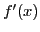
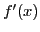

Next: Values of the independent Up: Variables and functions Previous: Independent and dependent variables. Contents Index
The symbol  is used to denote a function of
is used to denote a function of  , and is
read ``
, and is
read `` of
of  ''. In order to distinguish between different
functions, the prefixed letter is changed, as
''. In order to distinguish between different
functions, the prefixed letter is changed, as  ,
,  , ,
etc.
, ,
etc.
During any investigation the same functional symbol always indicates the same law of dependence of the function upon the variable. In the simpler cases this law takes the form of a series of analytical operations upon that variable. Hence, in such a case, the same functional symbol will indicate the same operations or series of operations, even though applied to different quantities. Thus, if
You can define a function in SAGE in several ways:
[fontsize=\scriptsize,fontfamily=courier,fontshape=tt,frame=single,label=\sage]
sage: x,y = var("x,y")
sage: f = log(sqrt(x))
sage: f(4)
log(4)/2
sage: f(4).simplify_log()
log(2)
sage: f = lambda x: (x^2+1)/2
sage: f(x)
(x^2 + 1)/2
sage: f(1)
1
sage: f = lambda x,y: x^2+y^2
sage: f(3,4)
25
david joyner 2008-08-11